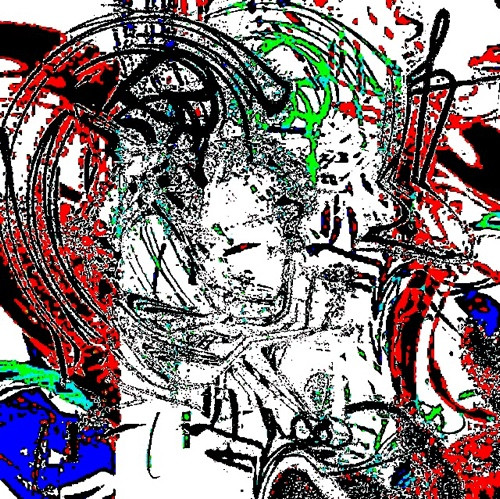

0he;bt
the Star lights up... and with it the Pterodactyl Eda sings its tender song. all Personalities are calm for a long time

gjk
reclined Stones are not as clear a solution as broken Mirrors. there is no Pilot behind the wheel of our Cosmodrome «Ласточка»